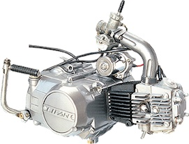
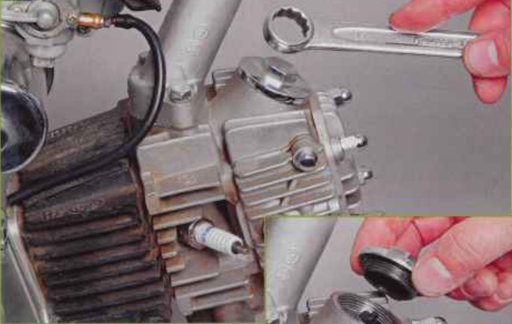
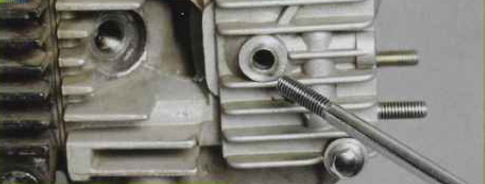
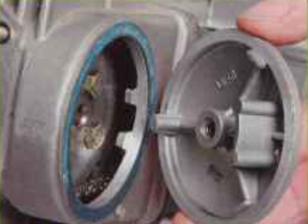
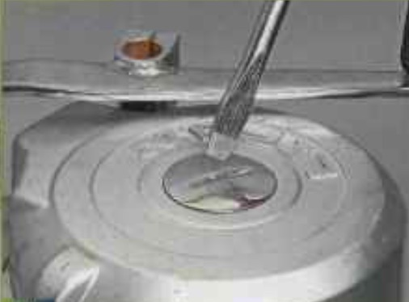
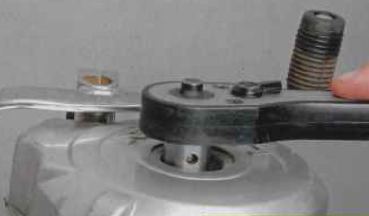
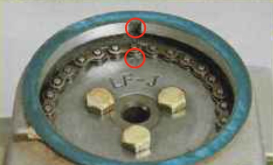

-

Потребность в регулировке клапанных зазоров возникает при появлении характерных стуков в головке цилиндра. Работы по определению зазоров в клапанном механизме и их регулировке необходимо производить "на холодную", после полного остывания двигателя.
-

Отворачиваем две цилиндрические пробки в крышке головки цилиндра. Под пробками расположены регулировочные винты клапанов (вверху — впускного, внизу — выпускного)
-

Выкручиваем свечу зажигания. Для доступа к шестерне распред.вала, отворачиваем болт, расположенный посредине правой крышки, — он проходит через полый распред.вал и прижимает левую круглую крышку к головке цилиндра.
-

Снимаем левую круглую крышку ГБЦ. Метки привода ГРМ нанесены на звезду цепного привода распред.вала и верхнюю часть корпуса головки. Замерять и выставлять клапанный зазор нужно при совпадении меток, что соответствует положению поршня в ВМТ.
-

Чтобы повернуть звезду распредвала в нужное положение для совпадения меток, нужно аккуратно вращать коленвал. Для доступа к гайке коленвала, отверткой с крупным жалом отворачиваем резьбовую пробку (лючок) на левой крышке генератора
-

Проворачиваем гайку коленвала до тех пор, пока метки привода ГРМ на головке и звезде не совместятся.
-

В этом положении, если взяться рукой за регулировочные гайки клапанов, можно ощутить их небольшой свободный ход (если клапана не зажаты).